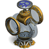

Получено: файл; исходный URL. Файл получен без перекодирования; авторство отдельно не установлено. Если в статье исходная ссылка ведёт на другой хост, побайтовое совпадение не проверено. Страница: источник.


Насос 1 — Святилище
историческая браузерная социальная игра; платформа и редакция уточняются- Тип
- Постройка
- Версия и дата
- историческая браузерная социальная игра; платформа и редакция уточняются
Данные по источнику · браузерная игра; платформа не уточнена · дата публикации указана в URL, дата дальнейших правок неизвестна
Предварительно: Фанатский источник; возможны опечатки, поздние изменения и отличия платформ. Вероятности выпадения не установлены.. Требуется сверка.
- Место и назначение
- Недостроенный насос на Святилище, достраивается по квесту «Безысходность». Трубопровод, согласно статье, должен проходить через все достроенные насосы.
- Строительство
- 3 стеклянные трубы, 3 скотча, 18 проволоки — 10 опыта. Купить и продать нельзя.
- Оговорка
- У изображения Насоса 1 имя файла nasos-2.png; номер взят из подписи статьи, не из имени файла.
Связанные сущности
- Святилище — локация объекта по статье